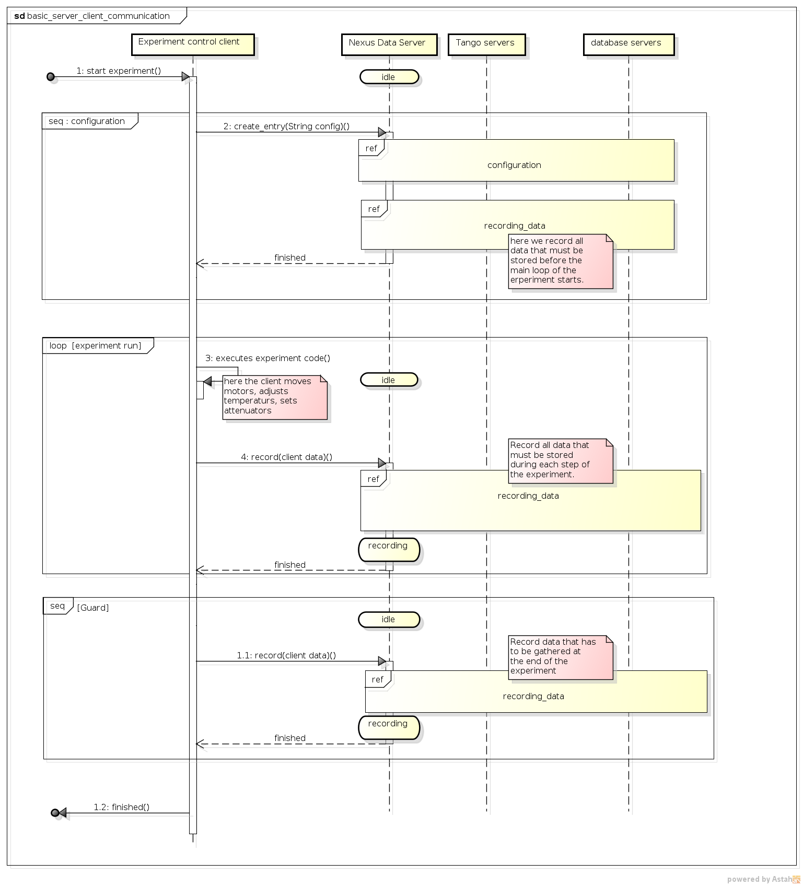
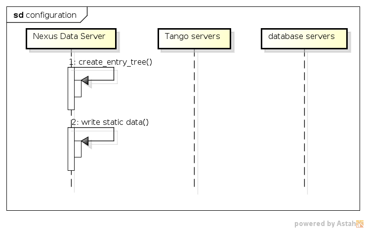

NXDL extensions for data sources¶
In order to describe various data sources the NXDL
standard has been
extended by XML tags listed below. Thus, <strategy /> and
<datasource /> tags can be situated inside
<field />– for its value<attribute />– for its value<dim />– for its value (from nxswriter v1.7.0)<link />– for its target (from nxswriter v1.9.0)
The other ones are nested inside <datasource/> tag.
The <strategy> tag¶
The strategy tag defines when and in which way the data is stored. An example of usage:
<field name="energy" type="NX_FLOAT" units="GeV" >
<strategy mode="STEP" trigger="trigger1" />
<datasource type="CLIENT">
<record name="counter_1"/>
</datasource>
</field>
The tag can have the following attributes:
mode specifies when the data is fetched, i.e.
INIT during opening a new entry
STEP when the record() command is performed
FINAL at the time of closing the entry
POSTRUN during post-processing stage
CONFIG before opening a new entry (used only for dimensions)
trigger stands for the name of the related trigger in asynchronous STEP mode (optional)
grows selects which a field dimension grows of in the STEP mode. The default growing dimension is the first one, i.e. grows=1 (optional)
compression specifies filterID if data is compressed (optional)
integer filterID
true data going to be compressed with deflate
false data stored without compression (default)
compression_opts integer compression options (optional)
list of integer compression options separated by comma
rate compression rate for deflate (optional)
from 0 to 9
shuffle compression shuffle (optional)
true shuffle enabled (default)
false shuffle disabled
canfail specifies if during reading data exception should be thrown (optional)
false on error exception is raised (default)
true on error
warning info is printed and the record is filled by a maximum value for the record type
The content of the strategy tags is an label describing data merged into the H5 file by a post-processing program.
An example of usage:
<field name="energy" type="NX_FLOAT" units="GeV" >
<strategy mode="POSTRUN" >
http://haso.desy.de:/data/energy.dat
</strategy>
</field>
The <datasource> tag¶
The datasource tag specifies a type of the used data sources. They can be one of built types, i.e. CLIENT, TANGO, DB, PYEVAL or external ones – defined in external python package and registered via JSON data.
The <datasouce> tag acquires the following attributes:
type related to a type of data source with possible values:
CLIENT for communication with client via JSON strings
TANGO for taking data from Tango servers
DB for fetching data from databases
PYEVAL for evaluating data from other data sources by python script
other type name of data source which has been registered via JSON data.
name datasource name (optional)
CLIENT datasource¶
The CLIENT datasource allows to read data from client JSON strings. It
should contain a <record /> tag. An example of usage:
<datasource type="CLIENT" name="exp_c01">
<record name="counter_1"/>
</datasource>
<record>¶
The record tag defines the fetched data by its name. It has an attrbute
name which for the CLIENT data source type denotes a name of the data in the JSON string.
An example of usage:
<record name="Position"/>
TANGO datasource¶
The TANGO datasource allows to read data from other TANGO devices. It
should contain <device/> and <record/> tags. An example of
usage:
<datasource type="TANGO">
<device hostname="haso.desy.de" member="attribute" name="p09/motor/exp.01" port="10000" encoding="LIMA_VIDEO_IMAGE"/>
<record name="Position"/>
</datasource>
<device>¶
The device tag describes the Tango device which is used to get the data. It has the following attributes:
name corresponding to a name of the Tango device
member defining a type of the class member, i.e.
attribute an attribute to read
command a result of a command to take
property a property to read
hostname a name of the host with the Tango device server (optional)
port a port number related to the Tango device server (optional)
encoding a label defining a required decoder for
DevEncodeddata (optional)group tango group name (optional)
If group attribute is defined data of the same group is read simultaneously and only ones during one experimental step.
<record>¶
The record tag defines the fetched data by its name. It has an attrbute
name which for the TANGO data source type a name of the tango class member.
DB datasource¶
The DB datasource allows to read data from accessible databases. It
should contain <database /> and <query> tags. An example of
usage:
<datasource type="DB">
<database dbname="tango" dbtype="MYSQL" hostname="haso.desy.de"/>
<query format="SPECTRUM">
SELECT pid FROM device limit 10
</query>
</datasource>
<database>¶
The database tag specifies parameters to connect to the required database. It acquires the attirbutes
dbtype describing a type of the database, i.e.
ORACLE an ORACLE database
MYSQL a MySQL database
PGSQL a PostgreSQL database
dbname denoting a name of the database (optional)
hostname being a name of the host with the database (optional)
port corresponding to a port number related to the database (optional)
user denoting a user name (optional)
passwd being a user password (optional)
mycnf defining a location of the my.cnf file with MySQL database access configuration (optional)
node corresponding to a node parameter for the ORACLE database(optional)
The content of the database tag defines Oracle DSN string (optional)
<query>¶
The query tag defines the database query which fetches the data. It has one attribute
format which specifies a dimension of the fetch data, i.e.
SCALAR corresponds to 0-dimensional data, e.g. a separate numerical value or string
SPECTRUM is related to 1-dimensional data, e.g. a list of numerical values or strings
IMAGE describes 2-dimensional data, i.e. a table of specific type values, e.g. a table of strings
The content of the query tags is the SQL query
Another example of usage:
<datasource type="DB">
<database dbname="mydb" dbtype="PGSQL"/>
<query format="IMAGE">
SELECT * FROM weather limit 3
</query>
</datasource>
PYEVAL datasource¶
The PYEVAL datasource allows to read data from other datasources and evaluate it by a user python script. An example of usage:
<datasource type="PYEVAL">
<datasource type="TANGO" name="position">
<device hostname="haso.desy.de" member="attribute" name="p09/motor/exp.01" port="10000"/>
<record name="Position"/>
</datasource>
<datasource type="CLIENT" name="shift">
<record name="exp_c01"/>
</datasource>
<result name="finalposition">
ds.finalposition = ds.position + ds.shift
</result>
</datasource>
<datasource>¶
The PYEVAL datasource can contain other datasources. They have to have defined name attributes. Those names with additional prefix ‘ds.’ correspond to input variable names from the python script, i.e. ds.name.
<result>¶
The result contains python script which evaluates input data. It has the following attribute: * name corresponding to a result name. It is related to python script variable by ds.**name**. The default value name=”result”. (optional)
Sequence diagrams¶
 